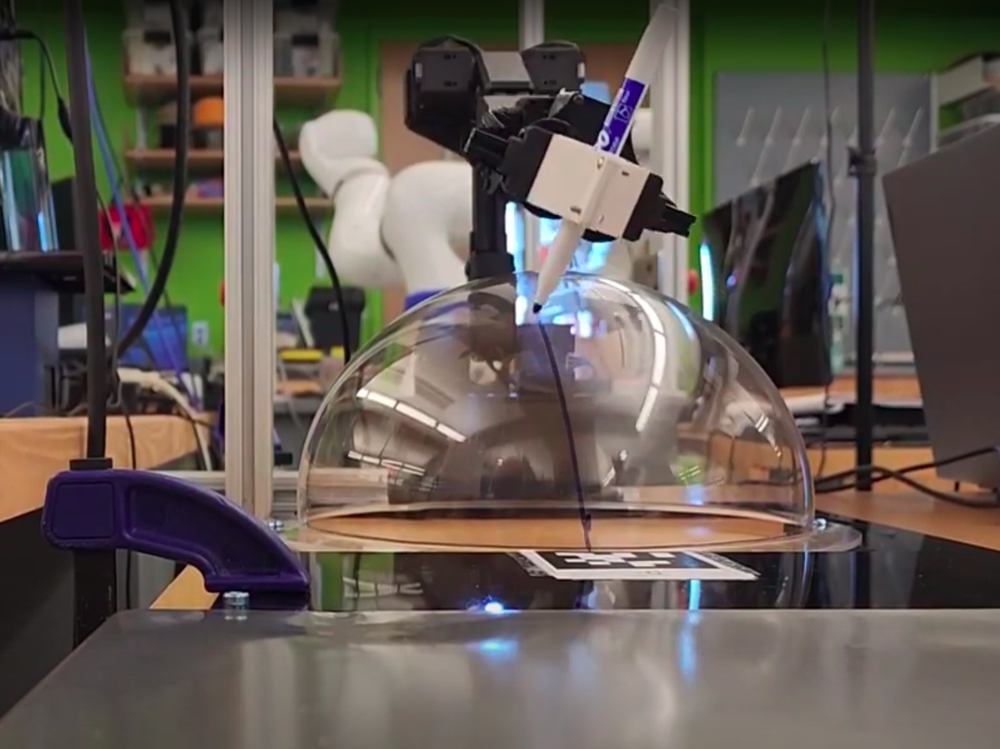
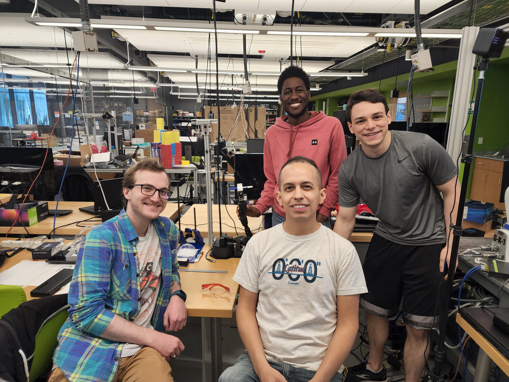
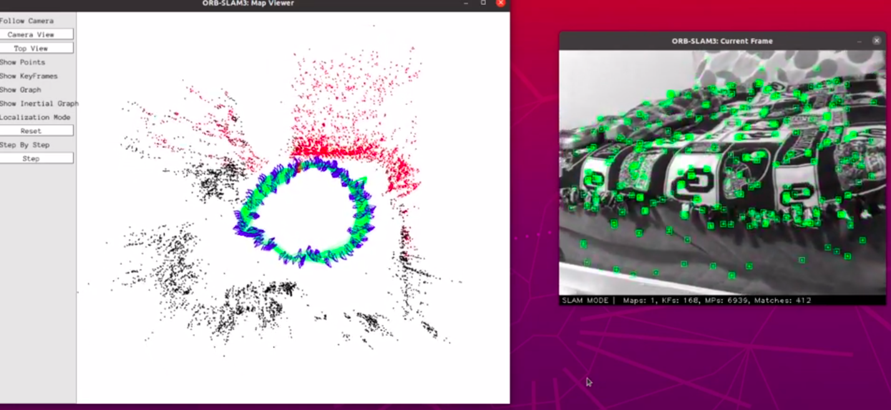
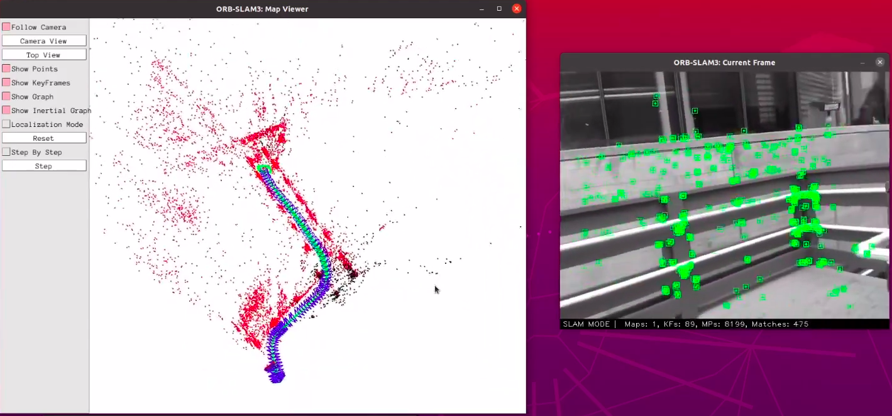

Kevin Robb Designs
I've been making robots and software projects for a long time!
2022
MichelARMgelo Robot Arm Drawing Project

For a final project in CS-5335: Robotic Science & Systems at Northeastern University, my group used an Interbotix PincherX 150 robot arm to draw with a marker on a variety of canvases. This entailed designing a custom end-effector, deriving equations to generate trajectories on flat, concave, and convex surfaces, and creating a software architecture to plan and execute them.
Demo Video
Git Repo
Report
Presentation

ORB_SLAM3 Implementation

For my final project in EECE-5554: Robotics Sensing & Navigation at Northeastern University, I implemented the visual SLAM package ORB_SLAM3 to perform several demos with my own data. I've written a fully detailed setup guide on GitHub, and posted many demos to YouTube in a playlist.
Git Repo
Demo Videos Playlist

2021
Turtlebot3 Exploration Project

This project in EECE-5550: Mobile Robotics at Northeastern University involved writing a ROS codebase for a turtlebot3 to autonomously map a closed environment while searching for all of an unknown number of AprilTags. The end result is a complete map with all tag poses identified. We did this using the Cartographer ROS package and a modified Explore Lite to perform frontier exploration.
Demo Video
Git Repo
Design Report

Intelligent Ground Vehicle Competition, Auto-Nav Challenge

The Aluminum Whale is essentially a small self-driving car, which must autonomously detect lanes and obstacles to navigate through a difficult course. I led the mechanical design and build of the chassis, with a focus on modularity and speed of assembly/disassembly for transport to and from the event. I also designed the localization system which included a custom Extended Kalman Filter implementation. We won first place in our event, Auto-Nav, as well as Rookie of the Year and 2nd place for the overall Grand Award. I served as captain of the team.
Video
Git Repo
Design Report
IGVC Rules

Engineering Physics Senior Design Project

This individual research project constituted my capstone for my B.S. in engineering physics at the University of Oklahoma. I implemented a Kalman Filter to estimate the state of a simulated mobile robot, then used evolutionary computation methods to optimize its parameters, thus in turn optimizing localization effectiveness. This allowed a basic KF with a constant velocity model to track position and yaw, and work in this nonlinear scenario about as well as a manually tuned EKF.
Git Repo
Paper

Fantasy Dice


2020
SCR Software Challenge

This was an in-house competition that my team in Sooner Competitive Robotics ran in simulation for Summer 2020, since our in-person competitions were cancelled due to Covid-19. It was an individual challenge in which each person implemented the entire ROS software base from scratch to complete the task of planning a maximally efficient path from the start to goal in a randomized environment. Score can be increased with a faster runtime and by raising difficulty settings such as obstacle density and sensor noise. I created a full architecture to perform localization, navigation, and reactive control to complete randomly generated courses quickly and autonomously on the highest noise settings.
Git Repo
Simulator

Stemmy

In 24 hours at Hacklahoma 2020, my team made Stemmy, a web-app lobby-based math game. The theme was STEM education, so we made something classrooms could use to play and learn together in a computer lab. I designed the back-end logic for handling lobbies, leaderboards, and gameplay in Python with socket.io. We won 3rd place overall!
Git Repo
Devpost

National Robotics Challenge, Autonomous Vehicle Competition

My team built a small autonomous racing robot that runs on a course for which the map is known and static. I created the navigation and path planning systems that use a goal trajectory and localization info to run Pure Pursuit with a PID to keep the robot on path. Due to Covid-19, the competition was cancelled :(
Demo Video
Git Repo
NRC-AVC Rules
About NRC

2019
Mercury Remote Robot Challenge

This competition mimicks a far-away robot being teleoperated by a driver who cannot physically see or interact with the vehicle. The drive team was more than 80 miles away while running the course, seeing only through the robot's onboard camera and sensors, and sending control commands back over the internet. All mechanical components were 3D-printed, and the control software was designed to minimize latency. We had the second-highest score among all teams in attendance.
Demo Video
Mercury Rules
Field Specifications

Bee Clicker


Honors Thesis

This research project involved creating a full Java codebase to simulate many generations of agents making choices and evolving with a custom genetic algorithm. My goal was to explore the effect of nurturing and environmental changes on the evolution of risk adversity (or lack thereof). I found that the addition of nurturing made it far more likely that a population would develop risk-neutrality, while an individualistic species would almost certainly adopt extreme risk-aversion.
My paper concerning this project was published in the OU Honors College research journal (THURJ) in 2019, and it earned me the Undergraduate Libraries Research Award 1st place scholarship.
Git Repo
Paper
Poster

2018
Robogames' Autonomous 3kg Sumobot

I was the freshman team captain for this competition, and organized our travel to the event in California. We created a small robot which used a state machine to switch modes between defending itself and attempting to push the opponent out of the sumo ring. We earned 5th place at the competition.
Sumo Rules

2017
FIRST Tech Challenge Team 6566

The team that started it all; I participated in the FIRST Tech Challenge all through high school, and it was my favorite thing I had ever done. In my four years, I led team FTC 6566 Circuit Breakers from losing at qualifiers in 2013 to making the World Championship my senior year, 2017. I've never been prouder of a project than this robot built from literal scrap parts and a heck of a lot of work; it had an incredible influence on my journey to focus my career on robotics.
About FIRST
Design Notebook
Engineering Notebook